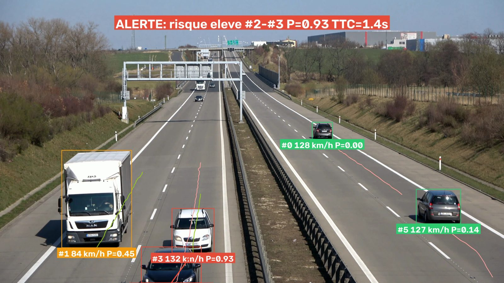
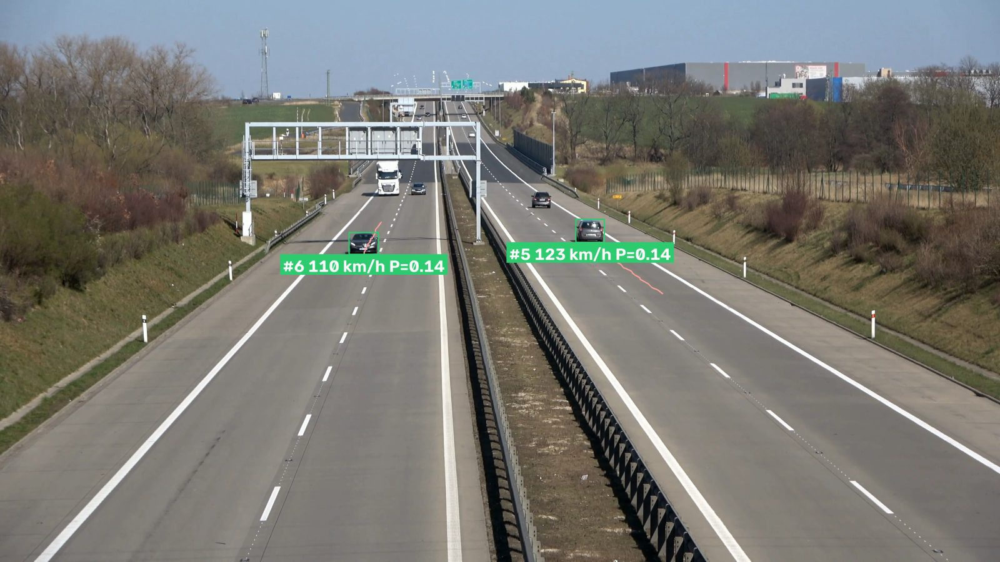

Prédiction d'accidents routiers à partir de vidéo
Le système analyse une vidéo de trafic, détecte et suit chaque véhicule, mesure sa vitesse et sa trajectoire en mètres réels, puis estime pour chaque paire de véhicules la probabilité d'un accident à court terme avec un réseau bayésien. Le risque est classé en trois niveaux (faible, moyen, élevé) et une alerte est émise en cas de danger.

Le dépôt contient deux choses :
- La bibliothèque
supervision(Roboflow, licence MIT) danssrc/supervision/. Elle fournit les outils de vision : annotations, zones, lecture et écriture vidéo. Elle n'est pas modifiée. - L'application de prédiction dans
examples/speed_estimation/: le script de traitement vidéo et le module de risqueaccident_risk.py. C'est là que se trouve le travail propre au projet.
Démarrage rapide
Python 3.10 ou plus récent. Les commandes se lancent depuis la racine du dépôt.
cd examples/speed_estimation
python3 -m venv venv
source venv/bin/activate
pip install -e ../.. ultralytics trackers pgmpy jsonargparse
python video_downloader.py # télécharge data/vehicles.mp4
python accident_risk.py # vérifie le module et affiche les tables
python ultralytics_example.py \
--source_video_path data/vehicles.mp4 \
--target_video_path data/vehicles-risk.mp4Le script affiche la vidéo annotée dans une fenêtre (touche q pour quitter), l'enregistre dans le fichier de sortie et écrit les alertes dans la console. Le modèle yolo11n.pt est téléchargé automatiquement au premier lancement.
pip install -e ../.. installe la copie locale de supervision présente dans ce dépôt. Le fichier requirements.txt liste aussi des dépendances d'anciens exemples (super-gradients, inference) qui ne sont pas nécessaires ici.
Options
| Option | Défaut | Rôle |
|---|---|---|
--source_video_path | requis | Vidéo à analyser. |
--target_video_path | requis | Vidéo annotée produite. |
--confidence_threshold | 0.3 | Confiance minimale d'une détection YOLO. |
--iou_threshold | 0.5 | Seuil de suppression des boîtes en double (NMS). |
Architecture
Le traitement est une boucle sur les images de la vidéo. Chaque image traverse deux blocs : un bloc de perception, qui transforme les pixels en positions de véhicules en mètres, et un bloc de prédiction du risque, qui transforme ces positions en probabilité d'accident.
Pipeline
Organisation du dépôt
| Chemin | Contenu |
|---|---|
examples/speed_estimation/ultralytics_example.py | Programme principal : boucle vidéo, détection, suivi, appel du module de risque, dessin et alertes. |
examples/speed_estimation/accident_risk.py | Module de risque : caractéristiques, seuils, réseau bayésien, niveaux. Indépendant de YOLO, testable seul. |
examples/speed_estimation/video_downloader.py | Télécharge la vidéo de démonstration. |
examples/speed_estimation/requirements.txt | Dépendances Python de l'exemple. |
src/supervision/ | Bibliothèque Roboflow Supervision (annotations, zones, vidéo, géométrie). |
docs/index.html | Cette documentation. |
.github/ | Intégration continue héritée de Supervision. |
Technologies
| Outil | Usage dans le projet |
|---|---|
| Ultralytics YOLO11n | Détection des véhicules, image par image. Version « nano », la plus légère, entrée redimensionnée à 640 px. |
| trackers (ByteTrack) | Association des détections d'une image à l'autre pour donner à chaque véhicule un identifiant stable. |
| OpenCV | Calcul de l'homographie (getPerspectiveTransform) et projection des points. |
| Supervision | Format commun des détections, zone polygonale, annotations, lecture et écriture vidéo. |
| pgmpy | Définition du réseau bayésien et inférence exacte par élimination de variables. |
| NumPy | Calculs vectoriels : vitesses, TTC, distances. |
Perception
Objectif : passer de pixels à des positions de véhicules en mètres, avec un identifiant constant dans le temps.
Détection
Chaque image est passée à YOLO11n, qui renvoie une boîte englobante, une classe et un score par objet. Les détections sous le seuil de confiance (0.3 par défaut) sont écartées. Seules les détections dont le point bas-centre tombe dans la zone calibrée de la route sont gardées (PolygonZone) : en dehors, la conversion en mètres n'a pas de sens et produirait de fausses alertes.
Suivi
ByteTrack relie les détections successives d'un même véhicule. Il utilise aussi les détections de faible confiance pour ne pas perdre un véhicule partiellement masqué. Les détections sans identifiant confirmé sont ignorées.
Vue de dessus
La caméra voit la route en perspective : un mètre près de la caméra occupe beaucoup plus de pixels qu'un mètre au loin. Une homographie convertit les pixels en coordonnées sur le plan de la route. Quatre points du sol dans l'image (SOURCE) sont associés aux quatre coins d'un rectangle de 25 m × 250 m (TARGET).
Pour chaque véhicule suivi, le point bas-centre de sa boîte (contact avec le sol) est projeté, et le triplet (image, x, y) est ajouté à son historique. L'historique garde la dernière seconde (25 images).
Les coordonnées SOURCE sont propres à la caméra de la vidéo de démonstration. Pour une autre vidéo, il faut repérer quatre points du sol formant un rectangle de dimensions connues. Voir Réglages.
Caractéristiques
Le réseau bayésien raisonne sur quatre informations par paire de véhicules : le temps avant collision, la distance de sécurité, la vitesse et la stabilité de la trajectoire. Elles sont calculées à partir des historiques en mètres.
Cinématique d'un véhicule
Un véhicule n'est évalué que si son historique couvre au moins une demi-seconde. On note p0, pm, pn les positions au début, au milieu et à la fin de l'historique, aux instants t0, tm, tn.
La vitesse est un vecteur à deux dimensions : elle sert à la fois à l'affichage et à la prédiction de trajectoire. L'accélération compare la première et la seconde moitié de la fenêtre. Elle augmente avec un freinage brusque comme avec un changement de direction (écart, changement de voie).
Paires de véhicules
Toutes les paires de véhicules visibles sont évaluées, sauf celles distantes de plus de 60 m (aucune interaction possible à court terme). Pour une paire (i, j), avec p = pj − pi la position relative :
- Distance : |p|, en mètres.
- Headway (temps inter-véhiculaire) : si les deux véhicules sont dans la même voie (écart transversal inférieur à 3.5 m), écart longitudinal moins une longueur de véhicule (4.5 m), divisé par la vitesse du véhicule suiveur. C'est la « règle des 2 secondes » : à 90 km/h, 1 s de headway correspond à 25 m. Le suiveur est le véhicule dont la vitesse pointe vers l'autre. Hors même voie, le headway est infini.
- Vitesse de la paire : la plus grande des deux vitesses.
- Accélération de la paire : la plus grande des deux.
- TTC : détaillé ci-dessous.
Temps avant collision (TTC)
Le TTC est le temps restant avant que deux véhicules se touchent s'ils gardent leur vitesse actuelle. C'est l'indicateur de référence en sécurité routière pour repérer les quasi-accidents.
Avec p la position relative et v = vj − vi la vitesse relative, la position relative au temps t vaut p + v·t. La collision a lieu quand ce point entre dans une zone autour du véhicule, plus longue (4.5 m) que large (2 m). Pour garder un calcul simple, l'axe transversal est dilaté d'un facteur L/W, ce qui transforme l'ellipse en cercle de rayon L. On résout alors une équation du second degré :
Cette formulation couvre la collision par l'arrière, la collision frontale et les trajectoires qui se croisent. Deux véhicules côte à côte dans des voies voisines, à la même vitesse, ont une vitesse relative nulle : le TTC est infini et ils ne sont pas signalés, contrairement à un simple seuil de distance.
Discrétisation
Le réseau bayésien travaille sur des variables discrètes. Chaque mesure continue est rangée dans un état selon des seuils issus des pratiques de sécurité routière. Tous les seuils sont regroupés dans le dictionnaire THRESHOLDS.
| Nœud | Mesure | États et seuils | Justification |
|---|---|---|---|
| TTC | temps avant collision | critique < 1.5 s ≤ alerte < 3 s ≤ sur | 1.5 s est le seuil de conflit grave couramment utilisé (Hayward, SSAM de la FHWA). |
| Distance | headway | critique < 1 s ≤ courte < 2 s ≤ sure | Règle des 2 secondes. Sous 1 s, temps de réaction insuffisant. |
| Vitesse | max de la paire | faible < 50 ≤ normale < 110 ≤ elevee km/h | Adapté à l'autoroute de la vidéo. L'énergie d'un choc croît avec le carré de la vitesse. |
| Trajectoire | max accélération | stable < 3 m/s² ≤ brusque | Au-delà de 3 m/s², freinage appuyé ou manœuvre d'évitement. |
Réseau bayésien
Un réseau bayésien est un graphe orienté où chaque nœud est une variable aléatoire et chaque flèche une dépendance directe. Chaque nœud porte une table de probabilités conditionnelles (CPT) qui donne sa loi selon l'état de ses parents. Le réseau permet de calculer la probabilité d'une variable non observée (ici l'accident) à partir des variables observées, en combinant les causes de façon explicable.
Structure
Le choix d'un nœud intermédiaire Conflit sépare deux questions : « les véhicules sont-ils sur une trajectoire de rencontre ? » (TTC et distance) et « si oui, la situation tourne-t-elle à l'accident ? » (vitesse et stabilité). Cela réduit la taille des tables : 9 + 12 colonnes au lieu de 54 pour une table unique, chacune plus facile à justifier.
Tables de probabilités
Aucun jeu de données d'accidents étiqueté n'étant disponible, les tables sont fixées par expertise, à partir des seuils de la littérature et de règles de cohérence : la probabilité augmente quand le TTC baisse, quand le headway baisse, quand la vitesse monte et quand la trajectoire devient brusque.
P(Conflit = oui | TTC, Distance)
| TTC \ Distance | critique | courte | sure |
|---|---|---|---|
| critique | 0.97 | 0.95 | 0.90 |
| alerte | 0.75 | 0.60 | 0.45 |
| sur | 0.40 | 0.15 | 0.02 |
P(Accident = oui | Conflit, Vitesse, Trajectoire)
| Conflit | Vitesse | stable | brusque |
|---|---|---|---|
| non | faible | 0.005 | 0.03 |
| non | normale | 0.01 | 0.06 |
| non | elevee | 0.03 | 0.12 |
| oui | faible | 0.40 | 0.60 |
| oui | normale | 0.65 | 0.85 |
| oui | elevee | 0.80 | 0.95 |
Les nœuds racines ont aussi une loi a priori (trafic autoroutier courant, par exemple TTC « sur » dans 80 % des cas). Comme les quatre racines sont toujours observées au moment de l'inférence, ces a priori n'influencent pas le résultat. Ils rendent le modèle complet et utilisable pour d'autres requêtes, par exemple estimer la vitesse la plus probable sachant qu'un accident a eu lieu.
Inférence
Pour une paire, les quatre états observés forment l'évidence e = (TTC, Distance, Vitesse, Trajectoire). pgmpy calcule P(Accident = oui | e) par élimination de variables, ce qui revient ici à sommer sur le nœud latent :
Il n'existe que 3 × 3 × 3 × 2 = 54 combinaisons d'états. Le résultat de chaque combinaison est mis en cache (functools.lru_cache) : pgmpy n'est appelé qu'une fois par combinaison sur toute la vidéo, puis la réponse est immédiate. Sans ce cache, une vingtaine de véhicules (environ 190 paires) à 25 images par seconde rendrait l'inférence trop lente.
Exemple pas à pas
Deux véhicules dans la même voie roulent l'un vers l'autre à 90 km/h (25 m/s), séparés de 21.7 m.
| Étape | Valeur | État |
|---|---|---|
| TTC = (21.7 − 4.5) / 50 | 0.34 s | critique |
| Headway = (21.7 − 4.5) / 25 | 0.69 s | critique |
| Vitesse | 90 km/h | normale |
| Accélération | 0 m/s² | stable |
Niveaux de risque et alertes
La probabilité est convertie en trois niveaux. Chaque véhicule prend le niveau de sa paire la plus dangereuse.
Effets dans la vidéo et la console :
- Boîtes et étiquettes colorées selon le niveau, avec l'identifiant, la vitesse et la probabilité :
#3 132 km/h P=0.93. - Risque élevé : ligne rouge entre les deux véhicules, bandeau rouge en haut de l'image avec la paire la plus dangereuse.
- Console : une ligne par alerte, au plus une fois par seconde pour une même paire.
[ALERTE] t=2.0s frame=50 #2<->#3 P=0.93 TTC=1.4s headway=0.1s risque=élevéRésultats
Tests du module
python accident_risk.py rejoue quatre scénarios synthétiques et vérifie le niveau obtenu.
| Scénario | TTC | Headway | États (TTC, Distance, Vitesse, Trajectoire) | P | Niveau |
|---|---|---|---|---|---|
| Face à face, même voie, 90 km/h chacun | 0.34 s | 0.69 s | critique, critique, normale, stable | 0.63 | élevé |
| Voies voisines, même vitesse | ∞ | ∞ | sur, sure, normale, stable | 0.02 | faible |
| Suivi serré, le véhicule de devant freine à 6 m/s² | 5.1 s | 0.59 s | sur, critique, normale, brusque | 0.38 | moyen |
| Véhicules à 200 m | paire ignorée (au-delà de 60 m) | 0 | faible | ||
Vidéo de démonstration
Vidéo d'autoroute fournie par Roboflow : 3840×2160, 25 images par seconde, 538 images (21.5 s). Traitement sur processeur (Apple Silicon, sans GPU).

Sortie console sur la vidéo complète. Une seule situation dangereuse est détectée ; le reste du trafic, espacé et stable, reste en risque faible ou moyen, ce qui correspond à ce que l'on voit à l'écran.
[ALERTE] t=2.0s frame=50 #2<->#3 P=0.93 TTC=1.4s headway=0.1s risque=élevé
Réglages
Calibrer une nouvelle caméra
- Extraire une image de la vidéo et repérer quatre points au sol formant un rectangle réel (marquages de voie, bords de chaussée).
- Mesurer ou estimer sa largeur et sa longueur en mètres (largeur de voie : 3.5 m ; tiret autoroutier et espace : 12 m en Europe).
- Reporter les quatre points dans
SOURCE(ordre : haut gauche, haut droit, bas droit, bas gauche) et les dimensions dansTARGET_WIDTH,TARGET_HEIGHTdeultralytics_example.py. - Vérifier que les vitesses affichées sont plausibles avant de regarder les alertes.
Paramètres du module
| Paramètre | Valeur | Effet |
|---|---|---|
THRESHOLDS["ttc_s"] | (1.5, 3.0) | Limites critique / alerte / sur du TTC. |
THRESHOLDS["headway_s"] | (1.0, 2.0) | Limites du headway. |
THRESHOLDS["speed_kmh"] | (50, 110) | À baisser en ville (par exemple 30 et 50). |
THRESHOLDS["accel_ms2"] | 3.0 | À monter si le bruit de détection rend trop de trajectoires « brusques ». |
THRESHOLDS["risk_p"] | (0.30, 0.60) | Limites faible / moyen / élevé. |
VEHICLE_LENGTH_M, VEHICLE_WIDTH_M | 4.5, 2.0 | Taille de la zone de collision. |
LANE_WIDTH_M | 3.5 | Écart transversal en dessous duquel deux véhicules sont dans la même voie. |
PAIR_MAX_DISTANCE_M | 60 | Paires plus éloignées ignorées. |
ALERT_COOLDOWN_S (script) | 1.0 | Délai minimal entre deux alertes console pour une même paire. |
Limites et suites
- Tables fixées par expertise. Les probabilités sont cohérentes mais non calibrées sur des accidents réels. Avec un jeu de données étiqueté (situations et issue), pgmpy permet de les apprendre :
model.fit(dataframe), sans changer la structure. - Vitesse constante. Le TTC suppose que les véhicules gardent leur vitesse. Un modèle à accélération constante, ou une prédiction de trajectoire, anticiperait mieux les freinages.
- Bruit de détection. Les boîtes YOLO bougent légèrement d'une image à l'autre, ce qui gonfle l'accélération estimée. Un lissage (filtre de Kalman, moyenne glissante) réduirait les faux « brusque ».
- Calibration par caméra. La conversion en mètres dépend de la zone
SOURCE. Une erreur de calibration se propage aux vitesses, au headway et au TTC. - Performances. Environ 5 images par seconde sur processeur en 4K. Un GPU (
cuda) ou l'accélération Apple (mps) permettrait le temps réel. - Variables absentes. Météo, visibilité, type de véhicule (poids lourd) ou état de la chaussée pourraient devenir de nouveaux nœuds du réseau.
Référence du module
Fonctions de examples/speed_estimation/accident_risk.py.
| Fonction | Rôle |
|---|---|
assess_frame(tracks, fps) | Point d'entrée. tracks : {id: [(image, x, y), ...]}. Renvoie la cinématique par véhicule, le risque par véhicule {id: (niveau, probabilité)} et la liste des paires triée par probabilité décroissante. |
kinematics(history, fps) | Position, vecteur vitesse, vitesse en km/h et accélération d'un véhicule, ou None si l'historique est trop court. |
assess_pair(ki, kj) | Distance, headway, TTC, états discrets, probabilité et niveau pour une paire. |
time_to_collision(p, v) | TTC à vitesse constante avec zone de collision elliptique. |
discretize(ttc, headway, speed_kmh, accel) | Mesures continues vers états du réseau. |
build_network() | Construit et valide le DiscreteBayesianNetwork pgmpy. |
accident_probability(ttc, distance, vitesse, trajectoire) | P(Accident = oui) pour des états donnés, avec cache. |
risk_level(p) | 0, 1 ou 2 pour faible, moyen, élevé (RISK_LEVELS). |
from accident_risk import assess_frame, RISK_LEVELS
kin, vehicle_risk, pairs = assess_frame(tracks, fps=25)
for pair in pairs:
if pair["level"] == 2:
print(pair["ids"], pair["probability"], pair["ttc"])Bibliothèque Supervision : Roboflow, licence MIT. YOLO11 : Ultralytics, licence AGPL-3.0.